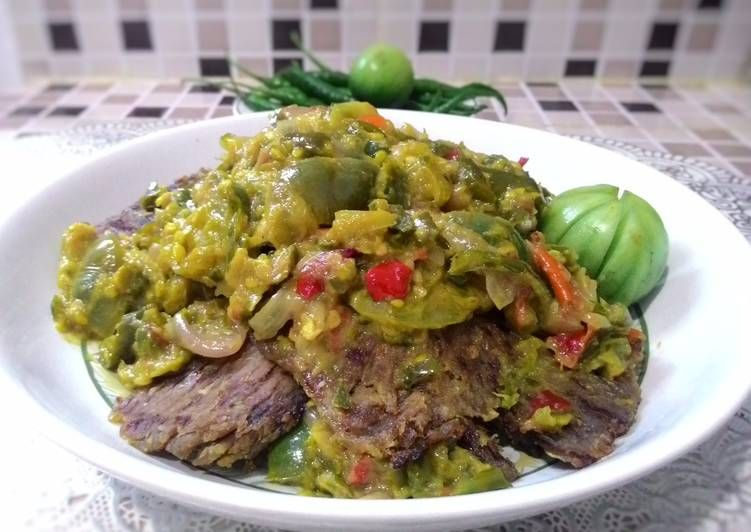
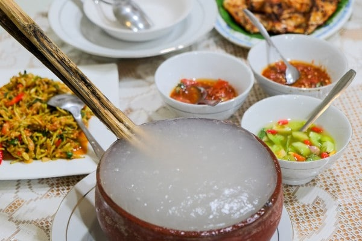
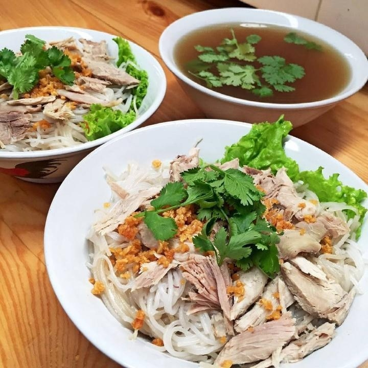
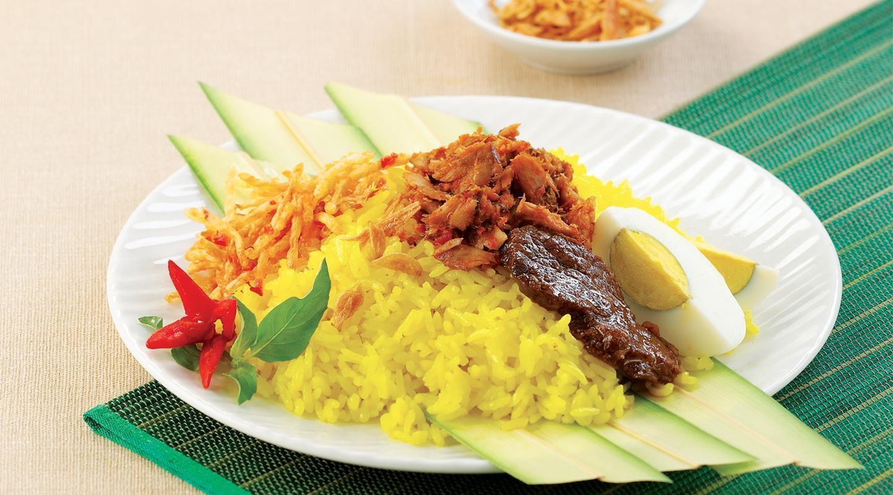
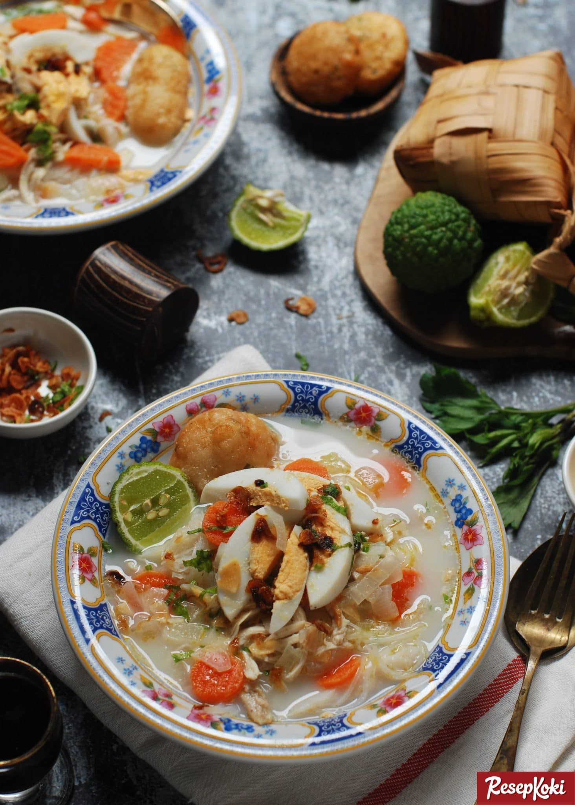

Kuliner
Makanan tradisional Indonesia dikenal dunia karena kombinasi unik dari berbagai jenis rempah-rempah. Daya tarik ini selalu menjadi point of interest di festival kuliner dunia selain juga keberagaman rasa yang berlimpah. Faktanya adalah, sebagian besar masakan dari dapur Indonesia kerap menggunakan rempah-rempah yang bahkan tidak dapat ditemukan di negara lain.
Indonesia memiliki berbagai jenis makanan khas dari setiap daerah yang beberapa di antaranya sudah terkenal secara internasional tapi tenang, kami sudah menyiapkan 9 makanan tradisional Indonesia yang mungkin tidak terlalu mainstream yang bisa jadi menu makanan kamu selanjutnya.
1. Ayam Taliwang
Berbeda dengan penampakan alam Pantai di Lombok yang menakjubkan dan menenangkan, makanan tradisional dari wilayah ini terkenal pedas dan berapi-api. Ekspor makanan yang paling terkenal dari pulau ini adalah ayam Taliwang, sejenis ayam bakar arang dengan atasan sambal yang menggiurkan dan pastinya membuat kecanduan.
Ayam Taliwang terkenal dengan dagingnya yang ekstra empuk dan dipasangkan dengan sempurna dengan sambal yang dibuat dengan cabai, bawang putih, bawang merah, tomat, pasta udang, jahe, dan gula aren. Hebatnya lagi, bahkan buat kamu yang tidak terlalu menyukai makanan pedas, ayam Taliwang masih dapat dinikmati dengan lahap.

Karena lonjakan popularitasnya belakang ini, kamu dapat menemukan cita rasa makanan khas Lombok ini di restoran Ayam Taliwang Lima Rasa di jalan utama Jl. Satrio, atau Rumah Makan Taliwang Bersaudara di area Tebet Jakarta Selatan.
2. Dendeng Batokok
Kalau kamu sering singgah ke restoran Padang, kamu mungkin pasti akan pernah melihat dendeng balado . Namun, kalau kamu sedang beruntung, kamu mungkin juga bisa merasakan nikmatnya dendeng batokok, saudari dari dendeng balado – yang menurut kami nih, jauh lebih nge-joss rasanya.
Dimakanan dengan sambal cabai hijau, daging dendeng batokok sangat lezat dan juga lebih segar berkat penambahan tomat dan cabai hijau. Untuk mendapatkan sensasi rasa dendeng batokok sebenarnya, kamu gak perlu jauh-jauh ke Padang karena di area mal Kota Kasablanka ada restora Sate Padang & Dendeng Batokok Salero Uni yang terbukti asli rasa Dendeng Batokok-nya.
3. Papeda
Saat beras menjadi makanan pokok di Indonesia bagian barat dan tengah, Indonesia bagian timur terutama area pulau-pulau di Maluku dan Papua memlih papeda, bubur kental yang terbuat dari batang pohon sagu sebagai makanan pokok.
Papeda dibuat dengan memasak tepung sagu dengan air sampai mengental. Makanan ini biasanya disajikan dengan sup kuning yang terbuat dari kunyit, jeruk nipis, ikan, dan disajikan dengan umbi bertepung dan berbagai macam sayuran yang menjadikannya kombinasi unik dalam hal tekstur dan memiliki rasa yang Indonesia banget.
Sejujurnya agak sulit untuk menemukan Papeda di wilayah selain di timur Indonesia tapi Jakarta pasti selalu punya solusinya. Buat kamu yang penasaran untuk mencoba kuliner ini kamu bisa ke area Kelapa Gading tepatnya di Yougwa Restaurant.
4. Ikan Pesmol
Next on our list ada masakan Sunda yang namanya Ikan Pesmol yang bisa dibilang adalah salah satu masakan yang paling underrated di Indonesia tetapi juga terkenal dengan rasanya yang laziz berkat perpaduan kesederhanaan dan kesegaran.
Daya tarik utama dari Ikan Pesmol adalah prosesnya yang relatif mudah plus, bahan-bahan yang dimasukkan dalam makanan ini biasa digunakan di dapur Indonesia — seperti tempe, tahu, dan ikan air tawar — dapat ditemukan hampir di mana-mana di negara kita yang tercinta ini.

Salah satu cabang hidangan yang menonjol dari makanan ini adalah ikan kuning pesmol yang – duh – berwarna kuning cerah. Makanan ini pada dasarnya adalah ikan goreng yang disiram dengan campuran olahan bawang putih, bawang merah, kemiri, jahe aromatik, ketumbar, dan kunyit.
5. Bihun Bebek
Meskipun tidak sepopuler mie ayam yang ada di mana-mana, bihun bebek adalah hidangan yang patut dicoba oleh mereka yang ingin mendapatkan pemahaman yang lebih baik tentang beragam masakan Indonesia. Spesialisasi dari kota Sumatera Utara tepatnya di kota Medan, bihun bebek terdiri dari bihun halus yang di atasnya di-topping dengan irisan lembut bebek yang dimasak lama, ditaburi bawang putih goreng, dan hiasi dengan bawang merah, dan disajikan bersama kaldu bebek yang rasanya deep.
Cara terbaik untuk menikmati bihun bebek adalah dengan merendam mie ke dalam kaldu dan memakannya secara perlahan. Sejujurnya, menu ini cukup underrated jadi sulit untuk menemukannya di banyak kota di Indonesia. Jadi kalau kamu sedang di Medan, mampirlah ke rumah makan Bihun Bebek Asie di Jalan Kumango untuk jajal sensasi makan makanan tradisional yang cukup underrated ini.
6. Rawon
Rawon punya visual yang in a way ga terlalu pleasing di mata tetapi jangan tertipu dengan warnanya yang gelap karena sebenarnya hidangan ini luarrr biasaaaa. Makanan lokal dari Surabaya di Jawa Timur, rawon adalah salah satu semur daging sapi yang paling dikenal di Indonesia.
Yang memberi rawon bahwa warna hitam gelap yang menjadi khasnya adalah keluak, buah dari spesies bakau yang berasal dari Asia Tenggara, yang disebut kepayang. Buah kepayang ini sarat dengan sianida, yang menjelaskan mengapa buah ini harus menjalani proses fermentasi yang panjang terlebih dahulu sebelum dapat dimasak. Hasil akhirnya: pasta hitam dengan rasa yang mirip kacang yang aman dikonsumsi.

Rempah-rempah lain yang digunakan untuk membuat makanan tradisional ini adalah bawang putih, bawang merah, kemiri, kayu manis, dan pala. Biasa disajikan dengan nasi, rawon dihiasi dengan bawang merah goreng, kerupuk udang, tauge, sambal, telur bebek asin, dan daun jeruk purut untuk menambah kekayaan rasa. Jelas, makanan ini tidak punya visual yang paling menarik, tetapi rasanya bisa diadu untuk masuk kategori makanan terenak di dunia.
7. Nasi Kuning Manado
Disajikan dalam bentuk khas meruncing bak sebuah gunung berapi, Nasi Kuning Manado sebenarnya adalah gundukan beras beraroma kunyit yang berbentuk kerucut yang dikelilingi oleh pilihan hidangan. Sejatinya, di Indonesia, nasi kuning bukan hanya pengganti cake untuk mengisi perayaan, tetapi juga merupakan sarapan pilihan bagi banyak orang.
Meski variasi nasi kuning yang paling umum dan tersebar luas bisa dibilang adalah turunan dari Jawa, Sulawesi Utara memiliki hidangan khasnya sendiri. Tidak jauh berbeda dalam hal tampilan, yang membedakan nasi kuning Manado dari sepupunya yang terkenal adalah makanan berbahan ikan cakalang yang pedas, semur daging sapi, kentang goreng iris tipis, telur rebus, dan sambal manis dan pedas plus semuanya dibungkus dengan daun telapak kipas woka.
Berita baiknya adalah, kamu ga perlu jauh-jauh ke Manado untuk nyobain makanan ini karena di Jakarta ada resotran OMA Nasi Kuning Cakalang Manado, yang secara tekstual punya rasa yang persis sama dengan hidangan aslinya.
8. Sate Buntel
List ini mungkin tidak akan lengkap tanpa makanan sejenis sate yang ada di setiap sudut di kios-kios penjual dan penjaja makanan. Namun, ada satu variasi sate yang masih kurang dikenal yang punya sate buntel. Menu ini semaking trending setelah Pak Jokowi mengunjungi restoran sate buntel dalam perjalanan ke kota kelahirannya di Solo.

Lantas, apa sih sebenarnya yang membedakan sate ini dari jenis sate lainnya? Tidak seperti variasi sate lainnya, sate buntel menggunakan bundel domba cincang berbumbu dan berbentuk oblong. Makanan ini kemudian dibungkus dengan lapisan tipis lemak yang meleleh saat dimasak, meresap ke daging dengan rasa yang lezat.
9. Soto Banjar
Soto adalah sup ayam khas Indonesia dan mungkin tiap daerah dan bahkan setiap kota di Indonesia punya caranya sendiri untuk membuatnya, tetapi satu fitur umum dari soto adalah kaldu kuningnya yang kaya akan rasa. Di Banjarmasin, ibukota provinsi Kalimantan Selatan, varian lokal dari soto adalah soto Banjar yang disajikan dengan ayam, roti kentang, telur rebus, dan ketupat.
Meskipun dibuat dengan kombinasi standar seperti bawang putih, bawang merah, dan lada, ciri khas soto Banjar adalah tidak adanya tambahan kunyit dan penambahan rempah-rempah seperti kayu manis dan pala untuk menggantikan. Apa yang bakal kamu dapatkan dari kombinasi ini adalah kaldu yang kaya dan gurih dengan aroma rempah-rempah yang menenangkan.
Untuk mendapatkan rasa soto Banjar yang sebenarnya di Jakarta, kamu bisa ke area Cilandak untuk makan di Soto Banjar Nyaman Antasari, atau jika ingin sensasi sebenarnya dari makanan tradisional ini, kamu bisa booking tiket pesawat untuk perjalanan ke Kalimantan sekalian berkunjung ke Soto Bang Amat di Banjarmasin.